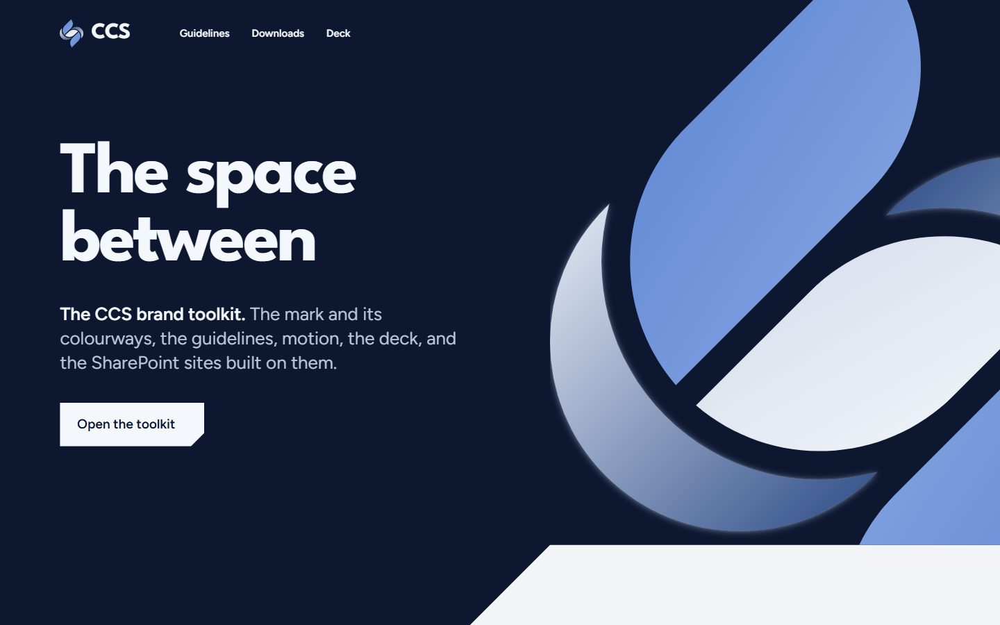
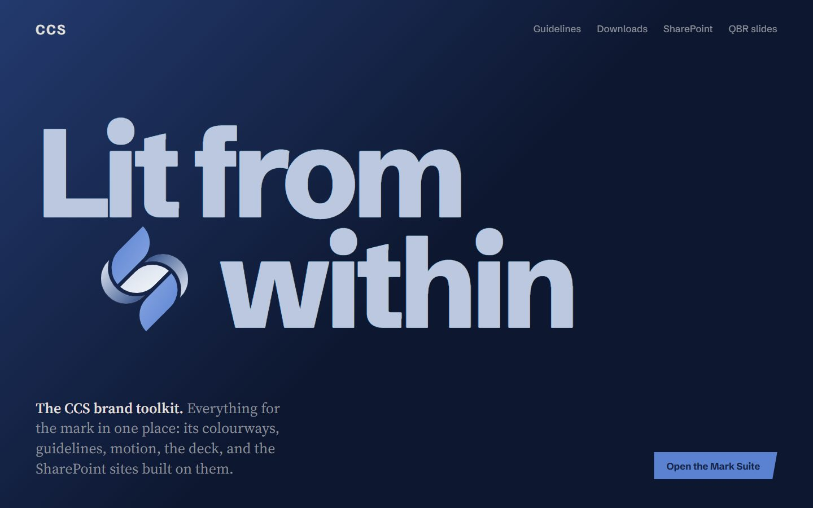
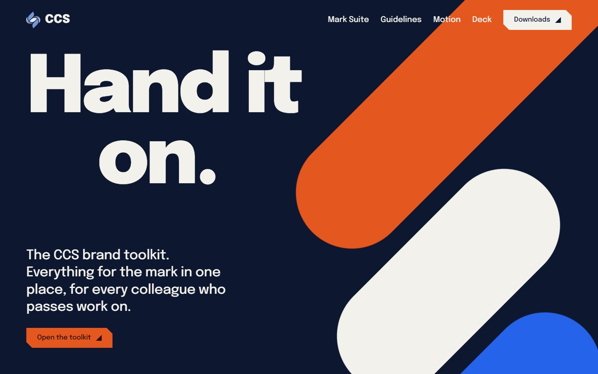

Five shapes.One sentence.
Every candidate answered the same line: two Cs that make an S. Each is shown here as the record has it, in its own colours and its own drawing, with the scores it was given.
The five-panel S was chosen, on 11 of 12.
- Clever
- Does the S appear without being drawn?
- Sleek
- Does it feel made, not assembled?
- Unique
- Could it be mistaken for someone else’s?
- Applicable
- Teams, Outlook, a slide, a lanyard, a favicon, and still itself.
Score each one yourself with the dots. Your scores stay in this browser.
Twenty-four faces.One wordmark.
Every face we set CCS in while the wordmark was open, shown in its own font as the record. The decision: CCS in Familjen Grotesk Bold, tracking +10. Manrope was the working face before this round.
Refined.Same S, sharper.
In 2026 we went back to the faceted S and changed nothing but what the eye needs at small sizes. The panel width, the 45 degree angle and the turn centre are unchanged. Five optical corrections, and the mark is 2.5% taller.
Same shape, kinder to the eye. At 16px the gap goes from 0.57px to 1.06px, just over one pixel, so the S stays open.
One gap value
0.163W to 0.18W
Panel to panel and panel to crescent now share one gap, 215.0 to 236.8 units.
A wider crescent
0.483W to 0.54W
The crescent at its widest grows from 635.0 to 710.4 units, and its tips end on the true circle intersection.
Panel-end circle at g/2
106.2 to 118.4 units
The offset was a little under half a gap. It is now exactly g/2.
A small cut under 40px
16px gap: 0.57px to 1.06px
Below 40px a second build opens the gap further, so it never fills in.
2.5% taller
6007.2 to 6158.4 units
The same panel width, a little more height. The ratio stays at 0.83.
16px
32px
Their Cs are drawn. Ours are found.
In the master the Cs are what three straight panels leave, and that is the part people remember. The refinement keeps that idea and tunes the drawing for small sizes.
| Measure | Current | Refined |
|---|---|---|
| Gap, everywhere | 215.0 (16.3% of W) | 236.8 (18.0% of W) |
| Gap at 16px and 32px tall | 0.57px, 1.15px | 1.06px, 2.12px |
| Crescent at its widest | 635.0 (48.3% of W) | 710.4 (54.0% of W) |
| Crescent at 16px tall | 1.69px | 1.93px |
| Crescent share of the ink | 24.7% | 26.8% |
| Crescent tips | Clipped to a 38.8-unit flat | End on the true circle intersection |
| Score | 10 of 12 | 11 of 12 |
Three directions.One system.
With the mark settled, three directions each built a whole toolkit from it. The system you are reading took one move from each.

The space betweenNo shape is added to the brand; shapes are only taken out of the mark. It gave the cut.

Lit from withinOne thing is lit, everything else falls into the ground. It gave the single lit element.

The hand-offEverything is passed along one 45 degree axis. It gave the step and the voice.
The combined system
The refined mark sets every rule: its 45 degree axis, its gap and its lit middle panel. Four moves are the whole graphic language: the cut, the step, the light and the found C.
See the synthesis